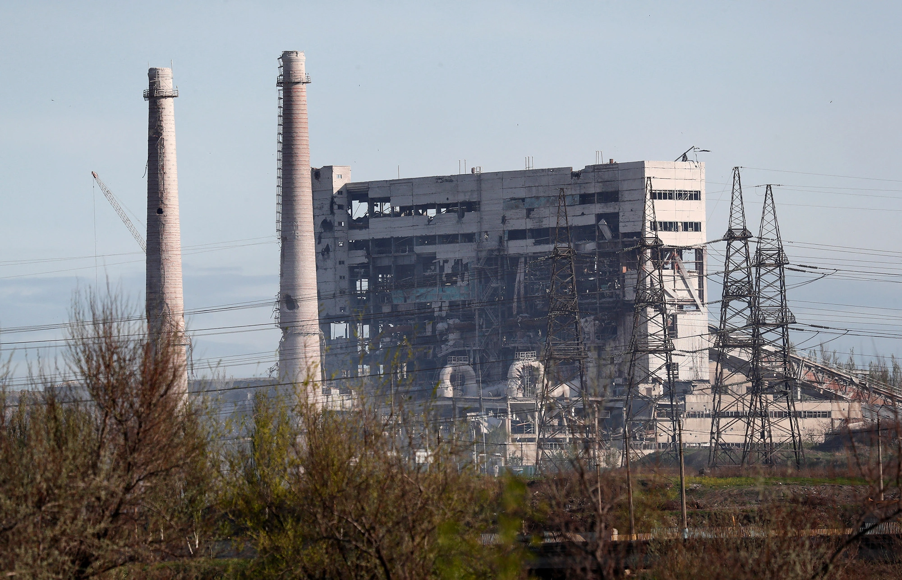

THẾ GIỚI/QUÂN SỰ
Thành Đạt - Thứ tư, 04/05/2022 - 20:45
(Dân trí) - Bộ trưởng Quốc phòng Nga cho biết lực lượng Ukraine cố thủ trong nhà máy luyện kim Azovstal ở thành phố Mariupol đã bị bao vây sau nhiều lần từ chối đầu hàng.
Tòa nhà bị phá hủy tại nhà máy luyện kim Azovstal ở Mariupol, Ukraine (Ảnh: Reuters).
"Theo chỉ thị của Tổng tư lệnh tối cao, các binh sĩ còn lại cố thủ trong khu công nghiệp của nhà máy Azovstal bị bao vây chặt chẽ dọc theo toàn bộ khuôn viên của nhà máy", Bộ trưởng Quốc phòng Nga Sergei Shoigu cho biết hôm 4/5.
"Nga nhiều lần đề nghị những người theo chủ nghĩa dân tộc trả tự do cho dân thường và hạ vũ khí để bảo đảm được cứu sống và đối xử tử tế phù hợp với các quy tắc của luật pháp quốc tế, nhưng họ đều phớt lờ. Chúng tôi sẽ tiếp tục nỗ lực này", ông Shoigu cho biết thêm.
Thị trưởng Mariupol Vadym Boichenko cho biết, các cuộc giao tranh mới đã nổ ra tại nhà máy Azovstal, nơi hàng trăm dân thường vẫn đang bị mắc kẹt bên trong cùng với các binh sĩ Ukraine cuối cùng trong thành phố.
"Hôm nay đã xảy ra những trận giao tranh khốc liệt trong khu vực pháo đài của chúng ta ở Azovstal. Những người lính dũng cảm của chúng ta đã bảo vệ pháo đài, nhưng gặp rất nhiều khó khăn, vì pháo hạng nặng và xe tăng vẫn phóng hỏa vào pháo đài, máy bay đã hoạt động, các tàu đã tiếp cận và cũng nã đạn vào pháo đài", ông Boichenko nói thêm.
Giao tranh tại nhà máy Azovstal của Ukraine
Phát biểu trên kênh truyền hình Ukraine, ông Boichenko cho hay có 30 trẻ em bị mắc kẹt bên trong nhà máy vẫn đang chờ được giải cứu.
"Những người mắc kẹt vẫn đang chờ đợi quá trình đàm phán và đợt sơ tán mới. Chúng ta phải hiểu rằng mọi người đang chết dần chết mòn. Không quân và pháo của đối phương vẫn đang bắn liên tục vào pháo đài", Thị trưởng Mariupol cho biết thêm.
Ông Boichenko cũng cho biết các nhà chức trách đã mất liên lạc với lực lượng Ukraine trong nhà máy.
Bộ Quốc phòng Nga ngày 3/5 thông báo lực lượng Nga tiếp tục pháo kích và không kích nhà máy luyện kim Azovstal ở thành phố Mariupol, Đông Nam Ukraine, do lực lượng vũ trang Ukraine đang "lợi dụng lệnh ngừng bắn".
"Tiểu đoàn Azov và các quân nhân Ukraine đang đóng quân tại nhà máy đã lợi dụng lệnh ngừng bắn, tranh thủ ra khỏi tầng hầm, tiến lên các vị trí bắn trong khu vực và trong các tòa nhà của nhà máy", Bộ Quốc phòng Nga tuyên bố.
Theo Bộ Quốc phòng Nga, các đơn vị của quân đội Nga và Cộng hòa Nhân dân Donetsk - vùng lãnh thổ ly khai ở Đông Ukraine sử dụng pháo binh và máy bay để phá hủy các vị trí bắn của lực lượng Ukraine.
Đầu tuần trước, Nga đã thông báo mở hành lang nhân đạo ở Mariupol, cho phép dân thường lựa chọn bất cứ hướng sơ tán nào. Tuy nhiên, Ukraine đã lên tiếng bác bỏ, cho rằng hành lang nhân đạo do một bên đơn phương lập ra không đảm bảo an toàn cho người dân sơ
Tổng thống Vladimir Putin cáo buộc các tiểu đoàn theo chủ nghĩa dân tộc cực đoan của Ukraine có thể sử dụng dân thường làm lá chắn sống và đây là "tội ác chiến tranh". Ông Putin khẳng định những binh sĩ Ukraine hạ vũ khí sẽ được đảm bảo tính mạng và hỗ trợ y tế nếu cần thiết.
Giao tranh dữ dội tại pháo đài Azovstal sau lệnh ngừng bắn

Những hình ảnh hiếm hoi về cuộc sơ tán dân thường khỏi "pháo đài" Azovstal
Nhà máy Azovstal được coi là "pháo đài" của lực lượng Ukraine trước các đợt tấn công dồn dập của Nga nhằm vào thành phố Mariupol. Nga nhiều lần đưa ra tối hậu thư, kêu gọi lực lượng Ukraine hạ vũ khí và đầu hàng, song phía Ukraine đều không chấp thuận.